MIL Debug Patches
outputs/mil_dino_shared_seasonal_20m_rgb_green_mean_green_mean_cuda/pca_val_best/debug_false_positives/images
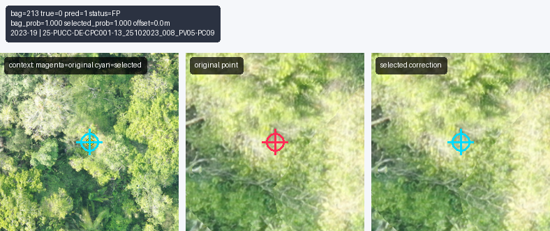
bag 213 | FP | bag 1.000 | inst 1.000 | 0.0m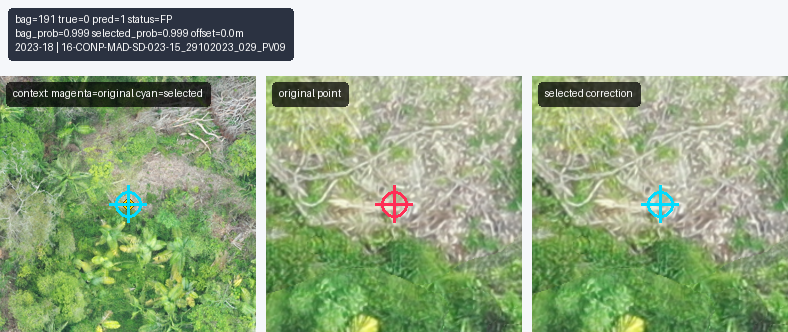
bag 191 | FP | bag 0.999 | inst 0.999 | 0.0m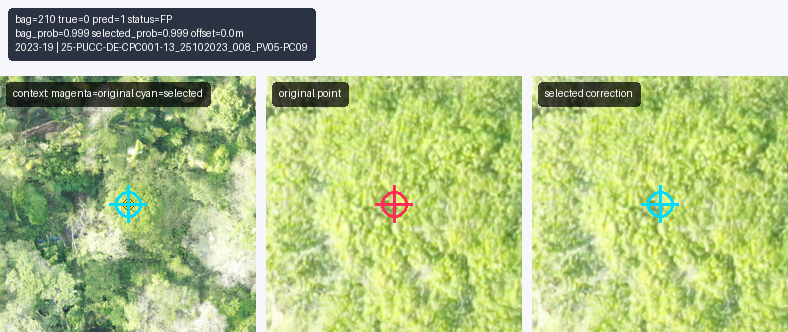
bag 210 | FP | bag 0.999 | inst 0.999 | 0.0m bag 22 | FP | bag 0.998 | inst 0.998 | 0.0m
bag 22 | FP | bag 0.998 | inst 0.998 | 0.0m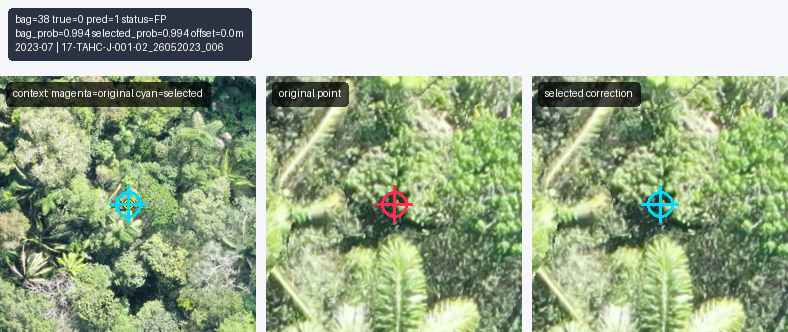
bag 38 | FP | bag 0.994 | inst 0.994 | 0.0m bag 51 | FP | bag 0.986 | inst 0.986 | 0.0m
bag 51 | FP | bag 0.986 | inst 0.986 | 0.0m bag 173 | FP | bag 0.984 | inst 0.984 | 0.0m
bag 173 | FP | bag 0.984 | inst 0.984 | 0.0m bag 50 | FP | bag 0.979 | inst 0.979 | 0.0m
bag 50 | FP | bag 0.979 | inst 0.979 | 0.0m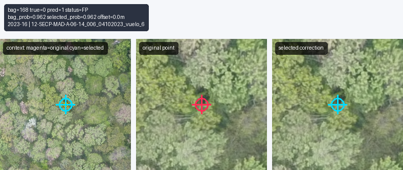
bag 168 | FP | bag 0.962 | inst 0.962 | 0.0m bag 192 | FP | bag 0.953 | inst 0.953 | 0.0m
bag 192 | FP | bag 0.953 | inst 0.953 | 0.0m bag 180 | FP | bag 0.947 | inst 0.947 | 0.0m
bag 180 | FP | bag 0.947 | inst 0.947 | 0.0m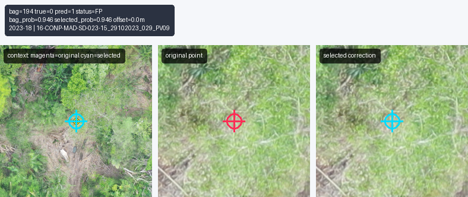
bag 194 | FP | bag 0.946 | inst 0.946 | 0.0m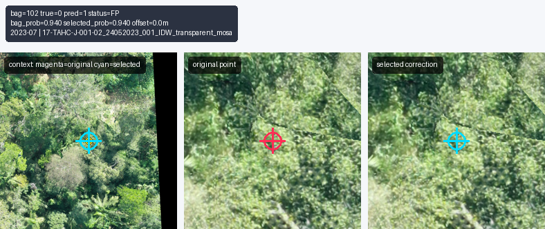
bag 102 | FP | bag 0.940 | inst 0.940 | 0.0m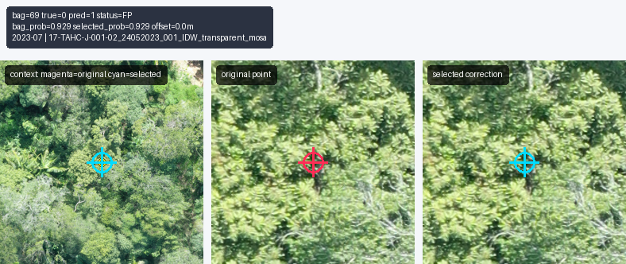
bag 69 | FP | bag 0.929 | inst 0.929 | 0.0m bag 85 | FP | bag 0.924 | inst 0.924 | 0.0m
bag 85 | FP | bag 0.924 | inst 0.924 | 0.0m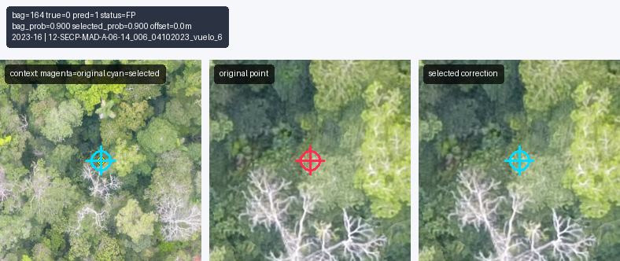
bag 164 | FP | bag 0.900 | inst 0.900 | 0.0m bag 167 | FP | bag 0.888 | inst 0.888 | 0.0m
bag 167 | FP | bag 0.888 | inst 0.888 | 0.0m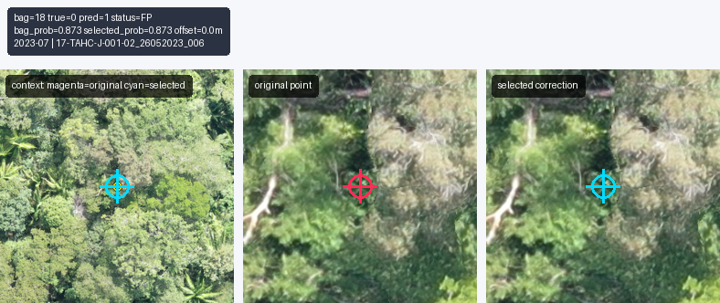
bag 18 | FP | bag 0.873 | inst 0.873 | 0.0m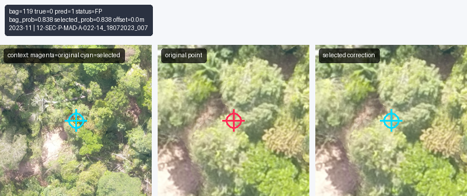
bag 119 | FP | bag 0.838 | inst 0.838 | 0.0m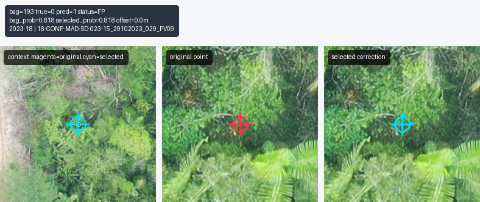
bag 193 | FP | bag 0.818 | inst 0.818 | 0.0m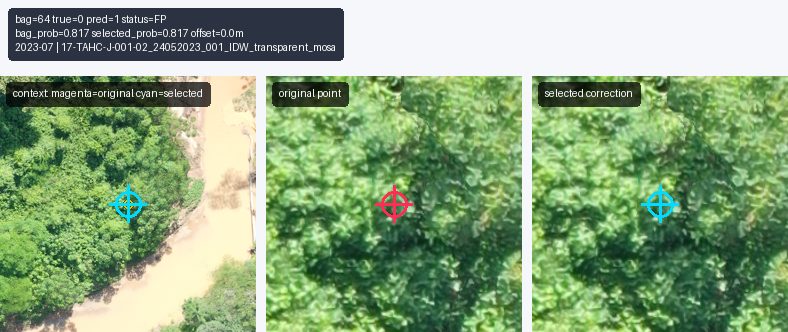
bag 64 | FP | bag 0.817 | inst 0.817 | 0.0m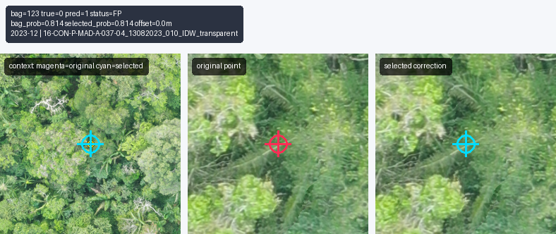
bag 123 | FP | bag 0.814 | inst 0.814 | 0.0m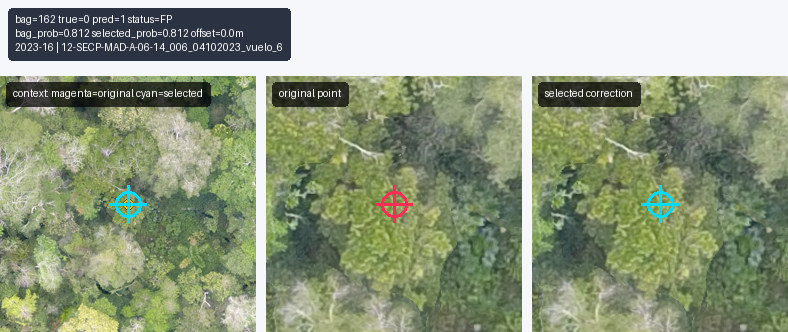
bag 162 | FP | bag 0.812 | inst 0.812 | 0.0m bag 203 | FP | bag 0.808 | inst 0.808 | 0.0m
bag 203 | FP | bag 0.808 | inst 0.808 | 0.0m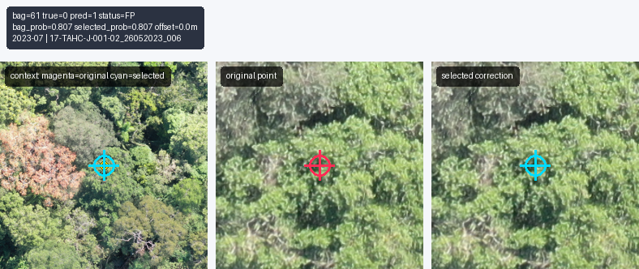
bag 61 | FP | bag 0.807 | inst 0.807 | 0.0m bag 214 | FP | bag 0.758 | inst 0.758 | 0.0m
bag 214 | FP | bag 0.758 | inst 0.758 | 0.0m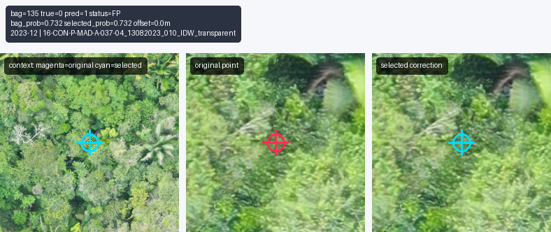
bag 135 | FP | bag 0.732 | inst 0.732 | 0.0m bag 72 | FP | bag 0.718 | inst 0.718 | 0.0m
bag 72 | FP | bag 0.718 | inst 0.718 | 0.0m bag 159 | FP | bag 0.700 | inst 0.700 | 0.0m
bag 159 | FP | bag 0.700 | inst 0.700 | 0.0m bag 77 | FP | bag 0.699 | inst 0.699 | 0.0m
bag 77 | FP | bag 0.699 | inst 0.699 | 0.0m bag 79 | FP | bag 0.675 | inst 0.675 | 0.0m
bag 79 | FP | bag 0.675 | inst 0.675 | 0.0m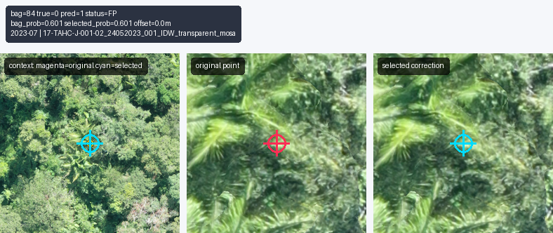
bag 84 | FP | bag 0.601 | inst 0.601 | 0.0m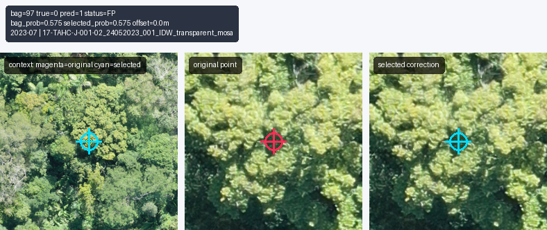
bag 97 | FP | bag 0.575 | inst 0.575 | 0.0m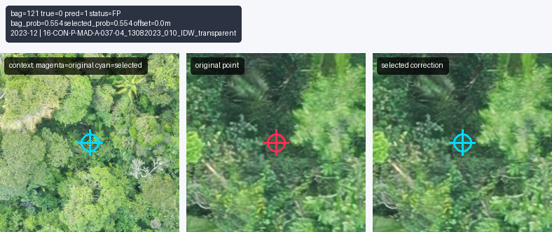
bag 121 | FP | bag 0.554 | inst 0.554 | 0.0m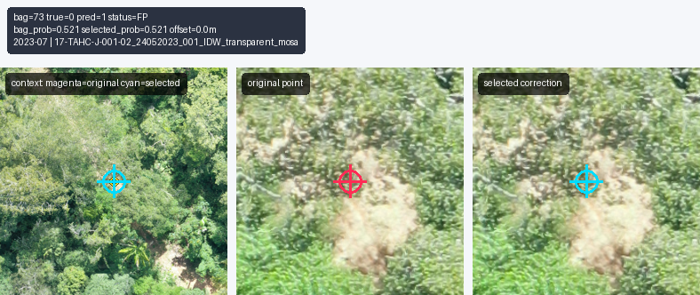
bag 73 | FP | bag 0.521 | inst 0.521 | 0.0m